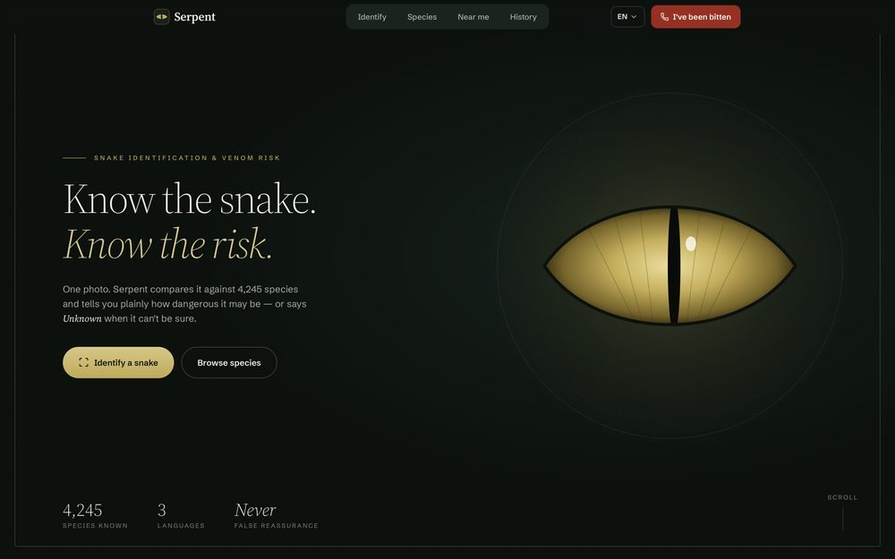
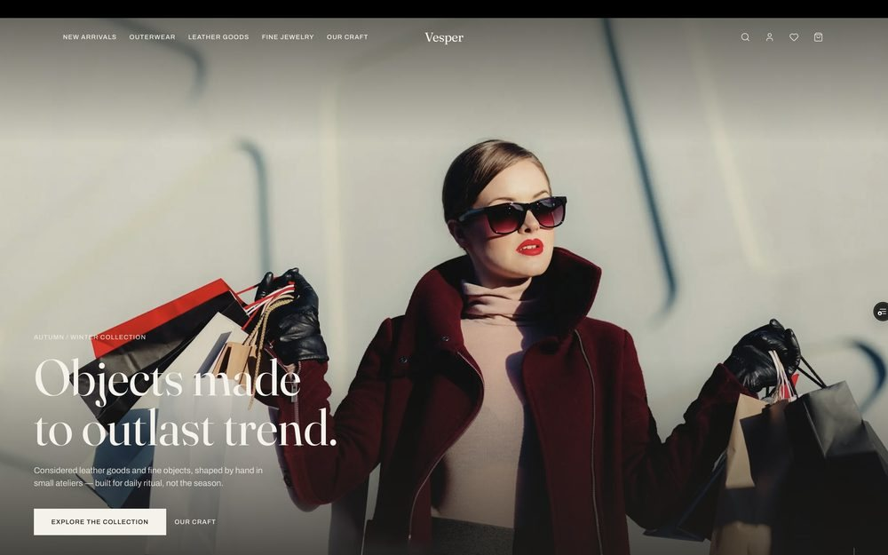
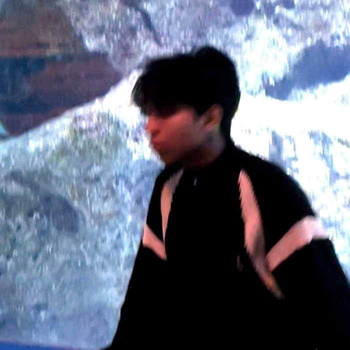

Problem → Constraints → Decisions → Proof
Each project page shows who was stuck, what made it hard, the three decisions that mattered with the screen that shows them, and links to the live product, the Figma file and the code.
UI/UX Designer & Developer · Bangkok
I design in Figma, then I build the product myself — so every screen here is something you can open and use. Five live projects, each with its own look, because each audience needed something different.
Open to UI/UX internships & roles
02 — Safety · Web app
Snake ID for someone who might have just been bitten. The key decision: let the app say “Unknown” instead of guessing. 4,245 species, in English, Thai and Burmese.

04 — Luxury store · E-commerce
A luxury shop that has to feel quiet and expensive, yet take real payments safely. I built the design system before any page, so the shop and the admin panel feel like one product.

Process
Each project page shows who was stuck, what made it hard, the three decisions that mattered with the screen that shows them, and links to the live product, the Figma file and the code.

I’m a Computer Science student at Assumption University who designs first. I plan how each screen will actually work while I’m still in Figma — then I build it, so the design survives real data, slow phones and real people.
B.Sc. Computer Science, Assumption University, Thailand — expected 2028. Courses: UI/UX Design, Algorithms, Data Structures.
English, Burmese · Spanish (beginner)